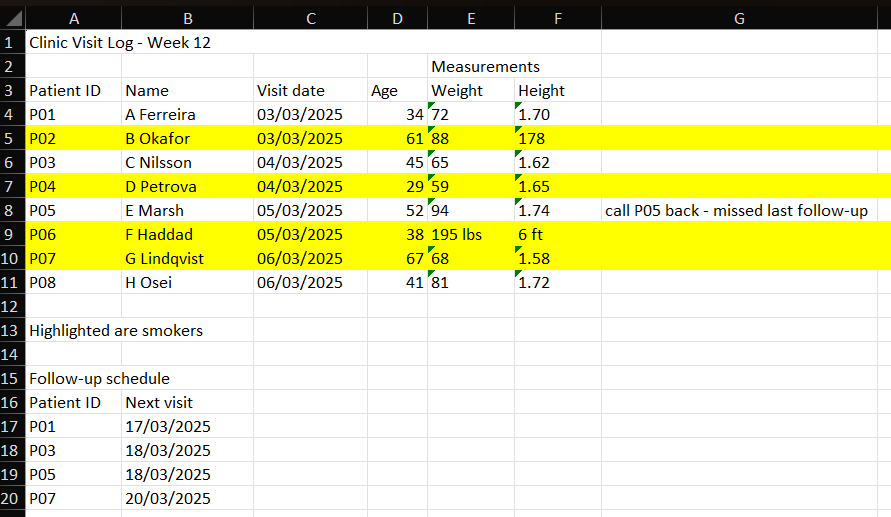
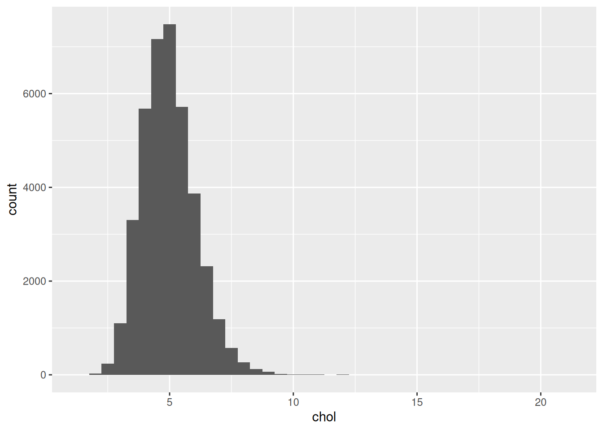
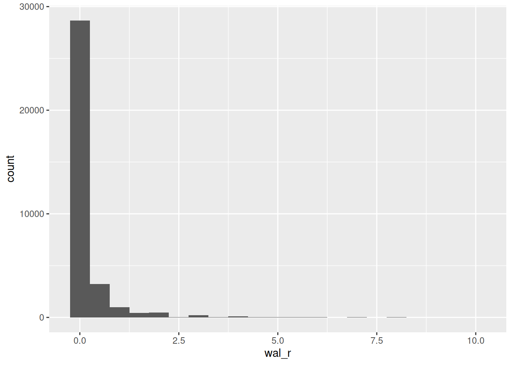

library(readr)
library(here)2 Data and data handling (Week 5)
A clinic spreadsheet kept by hand for years has a title sitting in the first row, a blank row under the headers, dates written three different ways, and a column where someone typed “n/a” one month and “-” the next. Nobody planned it that way. It happened one edit at a time, and files like it are what real analysis actually starts from. The dataset we typed out in Chapter 1 was clean because we invented it. This chapter deals with the other kind.
Making a file like that usable is most of what data analysis actually is, and none of it counts unless it’s written down: a cleaned dataset nobody can reproduce is one person’s private result. So the chapter runs from the messy spreadsheet all the way through to a saved script that rebuilds the lot from nothing. In between sits the step that catches almost everyone out the first time, which is telling R where a file lives on our own computer, getting it in, and checking what actually arrived instead of assuming. Week 6 is reading week; Chapter 3 picks up from here.
2.1 Chapter intended learning outcomes
By the end of this chapter you will be able to:
- Identify features of a spreadsheet that will prevent it being analysed, and restructure it
- Import a CSV into R using
readr::read_csv()and a correctly specified path built withhere::here(), and diagnose and resolve the most common import failures - Examine an imported dataset’s dimensions, variable names, and types with
dim(),names(), anddplyr::glimpse(), and its missing values withis.na() - Write, save, and re-run an R script that imports data, summarises it, and produces a plot
- Locate a downloaded file on your own operating system, construct or copy a valid path to it, and explain what a CSV file physically contains
2.2 Setup
There’s nothing to read in yet, so there’s nothing to set up in this chapter.
2.3 Tidy data, in a spreadsheet
2.3.1 What makes data usable
A dataset R can work with follows three simple rules: one variable per column, one observation per row, one value per cell. Data laid out this way is called tidy. It sounds obvious written down, but very few spreadsheets we get are tidy. People merge cells to make a heading look nice. They use colour instead of writing a word down. They leave blank rows for visual spacing. None of that survives import, and some of it actively breaks it.
2.3.2 What breaks an import
Picture reading the sheet in the screenshot below the way a person would, working down it row by row, and watching where it stops behaving like one clean table.
Row 1 is a title, “Clinic Visit Log - Week 12”, stretched across six columns as one merged cell. A heading merged like that looks fine to a person. But when R reads the underlying columns back out, most of them come back empty, because the merge only stored the value in one of the cells it covers. Row 2 does the same thing on a smaller scale, merging “Measurements” across just the Weight and Height columns, so a proper header for either one only turns up in row 3.
Read on down the Weight and Height columns themselves and one row breaks the pattern. Most patients are plain numbers, kilograms and metres. One row is text instead: 195 lbs and 6 ft. R reads a whole column as text the moment a single cell in it isn’t a bare number. So it only takes one row like that to turn an otherwise clean numeric column into text throughout, no matter how many other rows are perfectly formed. This is the same problem Chapter 1’s round() example was quietly solving for us by hand, turning a raw scale reading into a clean whole-kilogram number before it ever went in the log. Nobody has done that here, and R has no way to do it on our behalf.
Off to the side, in a cell with no column of its own, sits a note about one specific patient’s missed follow-up, disconnected from the table it’s actually about. Further down, after a blank row inserted purely for visual spacing, which becomes a row of missing values, NA, in every column the moment it’s imported, sits a second, smaller table: a follow-up schedule, unrelated to the patient log above it. R expects one table per sheet, so this second table gets read as more rows of the first one, and the result makes no sense.
Spreadsheet exercise (ILO 1). data/05-prep2-messy-clinic.xlsx is a small, made-up clinic visit log, built specifically to have every one of these problems at once. Open it in Excel, or whatever spreadsheet software you have.

05-prep2-messy-clinic.xlsx open in a spreadsheet application: a merged title row, a merged “Measurements” sub-header spanning the Weight and Height columns, a block of rows highlighted yellow with a caption below the table explaining what the highlighting means, a stray note in one row about a patient’s missed follow-up, a blank spacer row, and a second, separate table further down the sheet.Go through the sheet and list every feature above that you can find in it. There is also one problem in this sheet that wasn’t mentioned above. Try to build a clean version based on the principles above. Save your clean version as a .csv file. The Solutions section describes the fixes.
2.4 Finding a file, and telling R where it is
We just saved a clean CSV in the exercise above. Before we can read it, or anything else, into R, we need to know exactly where the file we want actually lives. This is the file system skill everything from here on assumes.
Where downloads go. When you download a file from a browser, most browsers save it into a folder called Downloads by default, without asking. On Windows that’s usually C:\Users\yourname\Downloads; on a Mac it’s usually /Users/yourname/Downloads. If you can’t find a file you just downloaded, that folder is the first place to check. Confirm where your own browser is set to save to, since some let you change it.
Reading a path. A file path is a set of directions from somewhere fixed down to one specific file, one folder at a time, separated by slashes. data/mph_nhanes_20241107.csv reads as “the folder called data, then inside it the file called mph_nhanes_20241107.csv.” A longer path just has more folders to walk through before reaching the file.
Copying a path. We’ll rarely type a full path out by hand; instead, we copy it straight from the file browser.
- Windows: hold Shift and right-click the file, then choose Copy as path.
- macOS: right-click the file, then hold the Option key, which changes the menu, and choose Copy “filename” as Pathname.
Backslashes versus forward slashes. A path copied this way on Windows uses backslashes, \, for example C:\Users\yourname\Documents\ies_mph\data\file.csv. R uses forward slashes, /, instead, and treats a lone backslash as the start of a special character, not a folder separator. So a pasted Windows path usually needs every \ replaced with / before R will accept it.
What a CSV actually is. Open a .csv file in a plain text editor, Notepad on Windows or TextEdit on a Mac, rather than in spreadsheet software, and you’ll see plain text: one line per row, values separated by commas. There’s no hidden formatting behind it, which is exactly why it’s such a safe format to hand between different pieces of software, R included.
2.5 Getting data in
2.5.1 read_csv() and here()
readr’s read_csv() reads a .csv file into R as a data frame. It needs a path telling it exactly where that file is, using the path skills from earlier in this chapter. Building that path with here(), from the here package, means the same code works on any machine, regardless of where the project folder actually sits on that machine’s disk: here() starts from the project folder and adds the pieces you give it, one folder at a time.
This is a different function from read.csv(), base R’s own version, which Chapter 1 used deliberately, and from write.csv(), which Chapter 1 used to save visits out. Base R’s versions weren’t wrong there, just the simpler tool for four hand-typed patients. From here on we use readr’s read_csv(), and later write_csv(), instead. They read faster on a file this size. They also don’t silently guess at things the way base R’s older functions do: read.csv() used to turn every text column into a factor by default unless told not to, a behaviour that caught out R users for years. read_csv() and write_csv() are the pair this book, and the wider tidyverse, are built around. The data is about to get a lot bigger than four patients, and that’s exactly when a guess R gets wrong starts to matter.
This chapter needs three packages: readr for reading files, here for building paths, and ggplot2 for the plot at the end. As Chapter 1 explained, installing a package and loading it are two different actions. Unless these are installed already, run this once in the console, not inside this document:
install.packages(c("readr", "here", "ggplot2"))After that, library() is all we need, in this session and every session after it:
library(here) prints one line when it loads, which this book hides because it’s too wide to fit the page. In your own console it says here() starts at ... followed by the full path to your project folder. Read it the first time you see it, because it’s here() telling you exactly which folder it will build every path from. If that path isn’t the project folder you built in Chapter 1, nothing below will find its files, and this is where you’d find that out.
2.5.2 Four things that go wrong
With the path skills just covered, we’re ready to actually read a file in, and the fastest way to get comfortable with that is watching it fail a few ways on purpose first. Almost every import problem we’ll see is one of four things.
A wrong filename. Close, but not exact:
read_csv(here("data", "mph_nhanes_20241107_data.csv"))Error:
! '/projects/ies_stats_ebook/data/mph_nhanes_20241107_data.csv' does
not exist.The real file is called mph_nhanes_20241107.csv, no _data in the name. R’s message states plainly that the file doesn’t exist at the path it tried, which is exactly what Chapter 1’s “file does not exist” error type looks like with a real file behind it.
read_csv(here("data", "mph_nhanes_20241107.csv"))A path pasted straight from Windows Explorer. Shift+right-click → Copy as path, from earlier in this chapter, gives you a full path using backslashes, for example C:\Users\yourname\Documents\new_folder\mph_nhanes_20241107.csv. Paste that directly into R as a string, without changing anything:
read_csv("C:\Users\yourname\Documents\new_folder\mph_nhanes_20241107.csv")Error: '\U' used without hex digits in character string (<input>:1:14)This isn’t even a “file not found” error. It never gets that far. \U is one of a handful of backslash sequences R’s parser treats specially inside a string, and \Users isn’t a valid one, so R refuses to parse the string at all. Every Windows path copied this way starts with C:\Users\..., so this isn’t a rare edge case, it’s the default shape of a pasted Windows path. The fix from earlier in this chapter still applies: replace every backslash with a forward slash before using a path in R. Better still, once the path is inside the project folder, here() avoids the problem entirely, since we never type the backslash-filled part of the path at all.
The right file, wrong location. Forgetting which subfolder the file lives in:
read_csv(here("mph_nhanes_20241107.csv"))Error:
! '/projects/ies_stats_ebook/mph_nhanes_20241107.csv' does not
exist.The filename is exactly right this time. What’s missing is "data", the subfolder it actually lives in. R’s error message looks identical to the wrong-filename case above, which is worth noticing: the message tells us that nothing was found at that path, not why the path was wrong. We have to check that ourselves.
read_csv(here("data", "mph_nhanes_20241107.csv"))The wrong file type. data/05-prep2-messy-clinic.xlsx, our own clinic file from the exercise above, is an Excel file, not a CSV. Reading it with read_csv() doesn’t throw an error at all.
To see what actually came in, we need three functions. dim() reports how many rows and columns a dataset has, and names() lists its column names. Both get a proper introduction in the next section, where we use them on real data; here they’re just the quickest way to look. substr(), from base R, takes a piece of text and keeps only part of it, given a starting and an ending position: substr(x, 1, 50) keeps the first 50 characters and throws the rest away. We need it because the column name that comes back is far too long to print in full.
There’s one extra argument in the call below, show_col_types = FALSE. read_csv() normally prints a short report of what it found and what type it guessed for each column. We meet that report properly in a moment, on the real data file, where it’s useful. Here it would just be several lines of nonsense about a file that hasn’t imported, so we turn it off to keep the broken result below the only thing on screen.
messy_attempt <- read_csv(here("data", "05-prep2-messy-clinic.xlsx"),
show_col_types = FALSE)Multiple files in zip: reading '[Content_Types].xml'dim(messy_attempt)[1] 1 1substr(names(messy_attempt), 1, 50)[1] "<?xml version=\"1.0\" encoding=\"UTF-8\" standalone=\"y"No error, but nothing usable either: one column, zero rows, and a column name that’s a fragment of raw XML. An .xlsx file is actually a small zip archive of several XML files bundled together. read_csv() has gone looking inside that archive and started reading one of those XML files as if it were plain text. This is the quietest kind of import failure there is: nothing crashes, nothing complains, and the result still looks like a data frame at a glance. Always check what actually came in, which is exactly what the next section is for.
Put right, all four attempts above collapse into the one call we actually want, and this is the real import we use for the rest of this book. But first, notice what we’re about to leave behind: four patients, hand typed in Chapter 1, were only ever enough to practise R’s syntax on. No real public health question gets answered from four people. The file we’re about to read holds nhanes_mph instead, an extract of a large American health survey in which adults were interviewed and then given a physical examination, tens of thousands of them rather than four. Chapter 3 introduces it properly. For today we only need it to be a real file with real data in it, at the scale our toy log never had:
nhanes <- read_csv(here("data", "mph_nhanes_20241107.csv"))We don’t necessarily need to use the here package. We can use an absolute or a relative path instead, as below. However, if the RStudio project is set up as recommended, using here or a relative path is easier to work with.
nhanes <- read_csv("./data/mph_nhanes_20241107.csv")nhanes <- read_csv("C:/Users/yourname/Documents/ies_mph/data/mph_nhanes_20241107.csv")An absolute path like that one only works on the machine it was written on, since it names a specific person’s folder by name. here() avoids exactly that problem. It finds the project folder wherever it happens to sit. That’s why this book uses it throughout, and why the restart test later in this chapter only works if our script uses here() instead of a path like the one above.
2.5.3 The block of output we’ll see
Run that line and read_csv() prints eight lines the moment it finishes. This book hides them, because one of them is too wide to fit the page, so here they are as they’ll appear in your console:
Rows: 41765 Columns: 27
── Column specification ────────────────────────────────
Delimiter: ","
chr (3): smoking, phq.c, lcod
dbl (24): SEQN, age, gender, eth, edu, alc_wk, vpa_w, ...
ℹ Use `spec()` to retrieve the full column specification
for this data.
ℹ Specify the column types or set `show_col_types = FALSE`
to quiet this message.It looks like something went wrong. Nothing did. This is a message, not a warning and not an error, and it appears every single time read_csv() reads a file successfully. Read it once, properly, because it’s the first thing we know about a dataset we’ve never opened.
Rows: 41765 Columns: 27 is the size of what came in. That’s the same fact dim() gives us below, arriving before we ask for it. If a file we expected to have a few hundred rows reports three, we’ve learned that here instead of ten minutes later.
Delimiter: "," is read_csv() confirming it split each line at commas, which is what the “comma” in “comma separated values” means, and what we saw for ourselves earlier in this chapter when we opened a CSV in a text editor.
Then the column specification: chr (3) lists three columns read as character, that is text, and dbl (24) lists twenty-four read as numbers. dbl is short for “double”, which is R’s ordinary way of storing a number that can have decimal places. This is read_csv() telling us what it guessed, one column at a time, and that guess is the thing worth checking. Notice smoking and phq.c sitting in the character list, and gender and eth sitting in the number list, and hold onto that: it comes back in the next section but one.
The two lines beginning with an ℹ are read_csv() offering a way to see the full specification, and a way to make the whole message go away. That second one is show_col_types = FALSE, the argument we used on the broken .xlsx import above. Now we know what it silences. Use it when we already know what’s in a file and don’t want the report again, not to make untidy output go away. “Untidy output” and “the only warning we were going to get” often look identical.
2.5.4 A first look
The message already told us the size and the column types. Four functions let us check that against what we actually have.
dim(nhanes)[1] 41765 27names(nhanes) [1] "SEQN" "age" "gender" "eth" "edu" "smoking"
[7] "alc_wk" "vpa_w" "mpa_w" "wal_r" "vpa_r" "mpa_r"
[13] "mpa_t" "vpa_t" "met_w" "met_r" "met_t" "sed"
[19] "chol" "phq" "phq.c" "blm.cvd" "dth" "lcod"
[25] "ucod_dm" "ucod_ht" "fu_month"dim() gives rows, then columns. names() lists every column name, in order, useful for checking a name before we type it.
head(nhanes)# A tibble: 6 × 27
SEQN age gender eth edu smoking alc_wk vpa_w mpa_w wal_r vpa_r
<dbl> <dbl> <dbl> <dbl> <dbl> <chr> <dbl> <dbl> <dbl> <dbl> <dbl>
1 12 37 1 3 3 Never 0.460 NA NA NA NA
2 20 23 2 1 1 Previous 3 NA NA NA NA
3 34 38 2 4 2 Current 1 NA NA NA NA
4 66 37 1 1 3 Never NA NA NA NA NA
5 69 27 1 4 3 Never 2 NA NA NA NA
6 81 30 1 3 3 Never 1 NA NA NA NA
# ℹ 16 more variables: mpa_r <dbl>, mpa_t <dbl>, vpa_t <dbl>, met_w <dbl>,
# met_r <dbl>, met_t <dbl>, sed <dbl>, chol <dbl>, phq <dbl>,
# phq.c <chr>, blm.cvd <dbl>, dth <dbl>, lcod <chr>, ucod_dm <dbl>,
# ucod_ht <dbl>, fu_month <dbl>head() prints the first six rows, so we can eyeball what real values actually look like.
summary(nhanes$age) Min. 1st Qu. Median Mean 3rd Qu. Max.
18.00 31.00 46.00 47.52 63.00 85.00 summary(), run on one column, gives its minimum, maximum, quartiles, and mean in one line, plus a count of missing values if there are any. Run on the whole data frame instead of one column, it repeats this for every column at once, which is a fast way to eyeball the whole dataset in one go.
Look at gender and smoking in the output above. gender is a plain number, 1 or 2, standing in for a category. smoking is already text, “Never”, “Previous”, or “Current”.
2.5.5 When R guesses the wrong type
read_csv() decides each column’s type by looking at the values in it. Most of the time that guess is right. It goes wrong in exactly the situation the messy spreadsheet exercise built on purpose: a column that’s plain numbers for every patient except one, who was recorded as "195 lbs" instead of a number in kilograms. R has no way to know that "lbs" should be split off, converted, and the rest treated as a number. It just sees text and stores the whole column as text, one stray row is all it takes. This is why the clean version of that spreadsheet needed every patient converted to the same unit, with that unit moved into the column name (weight_kg) and out of every individual value: it’s the only way read_csv() ends up with a column it can actually calculate on.
2.5.6 Spotting missing data
is.na() checks each value in a vector and returns TRUE where it’s missing, FALSE where it isn’t. sum() on that result counts the TRUEs, since R treats TRUE as 1 and FALSE as 0 when we add them up.
sum(is.na(nhanes$vpa_w))[1] 7354That’s how many participants have no value recorded for vpa_w, vigorous physical activity at work, out of 41,765 participants in total. nrow(), from base R, returns just the row count on its own, the same number dim() gives as its first value above, useful whenever we want the total on its own rather than alongside the column count. It’s a real gap, not a rounding artefact, and it matters. Whatever we go on to calculate from vpa_w only ever describes the participants who actually have a value. We should say so out loud whenever we report it, instead of letting it pass silently.
2.5.7 Using the dictionary file
nhanes_mph comes with a dictionary which names every column and states what it means. Reading it prints the same column specification message we just unpacked, saying two columns of text this time instead of twenty-seven columns of mixed types. This book hides it from here on, since it says the same kind of thing every time and we’ve now read one properly. You’ll still see it in your own console, and it’s still worth a glance:
dictionary <- read_csv(here("data", "mph_nhanes_20241107_dictionary.csv"))
dictionary# A tibble: 27 × 2
`Variable names` Description
<chr> <chr>
1 SEQN Participant identifier
2 age Age in years
3 gender Gender (1=Male; 2=Female)
4 eth Ethnicity (1=Mexican; 2=Other Hispanic; 3=White; 4=Blac…
5 edu Educaton (1=Less than high school; 2=high school gradua…
6 smoking Smoking status (Never/Previous/Current)
7 alc_wk Alcohol drinking per week
8 vpa_w Vigourous physical activity (hour/day) at work
9 mpa_w Moderate physical activity (hour/day) at work
10 wal_r Walking (hour/day) outside work
# ℹ 17 more rowsThe dictionary’s first column is called Variable names, with a space in it, so referring to it needs backticks, exactly as Chapter 1 covered. %in%, from the same chapter, tests whether each value is a member of a set. Put inside square brackets after a data frame’s column, with the row’s index implied, this keeps only the rows where the condition is true:
dictionary[dictionary$`Variable names` %in% c("age", "chol", "smoking"), ]# A tibble: 3 × 2
`Variable names` Description
<chr> <chr>
1 age Age in years
2 smoking Smoking status (Never/Previous/Current)
3 chol Total cholesterol (mmol/L) That’s the habit to build now: when a column’s meaning isn’t obvious from its name, the answer lives in this file, not in a guess. Chapter 3 uses this same file to build proper factors out of six of these columns; for today, just knowing how to look one up is enough.
2.6 A first analysis, and your first script
2.6.1 One summary statistic
mean(nhanes$chol, na.rm = TRUE)[1] 4.973316chol is total cholesterol, in mmol/L, and 2,589 participants have no value recorded for it. na.rm = TRUE drops those missing values before averaging the rest, exactly as it did back in Chapter 1’s mean() example on our own clinic log. Leave it out and the whole calculation returns NA, since R won’t silently guess what a missing value should have been.
2.6.2 A first taste of a grouped summary
nhanes$chol pulls the whole cholesterol column out as a bare vector, as $ did in Chapter 1. Adding square brackets straight after it, with a condition inside, keeps only the values where that condition is TRUE:
summary(nhanes$chol[nhanes$smoking == "Never"]) Min. 1st Qu. Median Mean 3rd Qu. Max. NAs
1.780 4.220 4.890 4.968 5.610 15.830 1839 summary(nhanes$chol[nhanes$smoking == "Current"]) Min. 1st Qu. Median Mean 3rd Qu. Max. NAs
1.530 4.220 4.890 4.996 5.660 15.900 882 That’s a genuine grouped summary, built entirely from tools already familiar: $, ==, and now [ and ] with a condition inside it. It works, but it’s clunky already with just two groups, and smoking has three. Chapter 3 introduces group_by() and summarise(), a far nicer way to do exactly this for as many groups as we like, in one line instead of several. This is only a preview of what’s coming, not the tool we’ll actually use going forward.
2.6.3 A first taste of a plot
library(ggplot2)
ggplot(nhanes, aes(x = chol)) +
geom_histogram(binwidth = 0.5)Warning: Removed 2589 rows containing non-finite outside the scale range
(`stat_bin()`).
ggplot2 code is joined with +, not the pipe. That’s a real inconsistency in R, not a mistake in this book, and Chapter 3 explains why and unpacks the rest of the grammar properly. For today, just notice the shape: cholesterol piles up around 4 to 6 mmol/L, with a long tail of higher values trailing off to the right.
2.6.4 That warning above the plot
The plot came with a line starting Warning:, saying it removed 2,589 rows. Read it, because we’ll see this one a lot: here’s what it actually says, and when it matters.
Firstly, a warning is not an error. An error means R gave up and produced nothing. A warning means R did the job and is telling us something about how. The plot is there and it’s fine.
Secondly, look at the number. It’s 2,589, exactly the count of participants with no cholesterol value that we found a moment ago. A histogram puts each participant somewhere along the x-axis, and a missing value has nowhere to go, so ggplot2 left those participants out and told us how many it dropped.
Why we leave these warnings switched on. R can be told to hide them, and plenty of people do, because they look untidy. This book doesn’t, and neither should we for now. That warning is a free count of how much of our data a plot is actually based on. Hide it, and a plot built on half our dataset looks exactly like a plot built on all of it. It’s the same reason we write na.rm = TRUE deliberately and say what it dropped, rather than typing it out of habit until it stops registering.
When it does need attention. The number is the thing to check, not the warning itself. Compare it against what we expect, the way we just did with is.na(). If it matches, carry on. If it’s different than expected, stop and find out why before trusting anything the plot shows: usually it means the wrong column, an import that didn’t go as planned, or an earlier step that threw away more rows than intended. And whenever we report a result, we should say how many observations it’s based on and how many were missing. A warning R printed for us is not the same as a reader being told.
2.6.5 From console to script
Everything we’ve done so far in this chapter has been one line at a time. That’s the right way to try something: type it in the console, look at what comes back, fix it if it’s wrong. But Chapter 1 already made the argument against leaving it there. We will need to do this again, and we will not remember what we typed.
So the working habit for the rest of this course is two steps, not one. Try the line in the console until it does what we want. Then move the line that worked into a script, and save it. The console is where we experiment; the script is what we keep.
To build one now:
- In RStudio, go to File → New File → R Script, or key in Ctrl+Shift+N or Cmd+Shift+N. A blank file opens in the source pane, top-left.
- Type the lines you want to keep. For a first script, that’s the
library()calls, theread_csv()line, one summary, and one plot. - Save it into the
scripts/folder you built in Chapter 1, with a name that follows its conventions: no spaces, no&or#, something that says what it does.first_analysis.Ris fine.Untitled1.Ris not.
Here’s what a complete first script looks like, start to finish. Nothing in it is new; it’s the pieces from earlier in this chapter, collected in the order they need to run:
library(readr)
library(here)
library(ggplot2)
nhanes <- read_csv(here("data", "mph_nhanes_20241107.csv"))
mean(nhanes$chol, na.rm = TRUE)
sum(is.na(nhanes$chol))
ggplot(nhanes, aes(x = chol)) +
geom_histogram(binwidth = 0.5)Notice the shape of it. The library() calls come first, because nothing below them works until the packages are loaded. The read_csv() line comes next, because every line after it needs nhanes to exist. A script runs top to bottom, so the order isn’t decoration, it’s the thing that makes it work.
2.6.6 Proving it actually works
Here’s the part people skip, and it’s the part that matters. A script that runs on your machine right now, in a session where you’ve been typing for an hour, is not yet proof of anything. Half of what it needs might already be sitting in memory from something you typed and forgot.
So test it properly. In RStudio, go to Session → Restart R. That throws away every object and every loaded package, leaving you with an empty session, exactly like the one a colleague, a marker, or you-in-six-months would start from. Now run your script from the top.
If it runs clean, the script is genuinely self-contained. If it fails, the error tells us precisely what we’d forgotten to write down, and the fix belongs in the script, not typed into the console again. That restart is the reproducibility argument from Chapter 1, made concrete: not “scripts are good practice” but “here is how we find out whether ours actually is one.”
That’s the script this whole chapter has been building toward, starting all the way back with a merged title row that wouldn’t import cleanly: not just an import that runs once, but one a stranger, or you in six months, could pick up cold and trust. Chapter 3 starts from exactly this point, with nhanes already read in and ready.
2.7 Exercises
Exercise 1 (ILO 2). This read_csv() call is supposed to read the dictionary file but doesn’t work:
read_csv(here("data", "mph_nhanes_dictionary.csv"))Work out what’s wrong with the path and write the corrected call.
Exercise 2 (ILO 3). Check mpa_w (moderate physical activity at work): find its type with class(), and count how many values are missing with is.na() and sum().
Exercise 3 (ILO 4). Produce one summary statistic and one plot for wal_r (walking, hours/day, outside work). Remember na.rm = TRUE if it turns out to have missing values.
Exercise 4 (ILO 4). Collect your answer to Exercise 3 into a proper script. Open a new R script, and write into it everything needed to go from a completely empty session to that summary and that plot: the library() calls, the read_csv() line, then the summary and the plot themselves. Save it into your scripts/ folder with a sensible name.
Then test it the way this chapter described. Go to Session → Restart R, and run your script from the top. If it errors, read the message, work out what the fresh session was missing, and add that line to the script rather than typing it into the console. Repeat until it runs clean from a restart. That is the point of the exercise, not the summary itself.
2.8 Self-check
Five questions on the concepts this chapter leans on hardest: paths, file types, and reading a real import problem. Answers are in the Solutions section below.
1. read_csv(here("data", "mhp_nhanes_20241107.csv")) fails, even though mph_nhanes_20241107.csv really is in the data folder. Which of the four import failures is this?
- The file is the wrong type
- A path pasted with backslashes
- A wrong filename, here a typo (
mhpinstead ofmph) - The file is in the wrong folder
2. What’s the actual difference between dim(nhanes) and names(nhanes)?
- They return exactly the same information in two formats
dim()gives the number of rows and columns;names()lists every column namenames()gives row and column counts;dim()lists column namesdim()only works afternames()has been run first
3. sum(is.na(nhanes$vpa_w)) returns 7354. What does that number actually mean?
- The sum of all values of
vpa_w - 7,354 participants have
vpa_wrecorded as exactly zero - 7,354 participants have no value recorded for
vpa_w - There are 7,354 participants in the dataset in total
4. read_csv() is used to read both mph_nhanes_20241107.csv and mph_nhanes_20241107_dictionary.csv, in two separate calls. Why two calls, and not one?
read_csv()can only read one row at a time- They’re two separate files, each holding a different table, so each needs its own call
- The dictionary file is not really needed, but the call is included anyway
read_csv()automatically finds and reads both once you name one of them
5. Reading 05-prep2-messy-clinic.xlsx with read_csv() produces a data frame with 1 column and 0 rows, and no error message. What does that tell you?
- The file is empty
read_csv()refuses to read.xlsxfiles and stops immediately.xlsxis the wrong file type forread_csv(), and the lack of an error is exactly why you always check what actually came in- The import worked correctly and the file genuinely has one column
2.9 Writing exercise
Using the mean and the histogram from Exercise 3, write a short paragraph, about 60 words, describing wal_r as you would in the results section of a report. State the mean and its units, say how many participants have no value recorded, and describe the shape of the distribution the histogram shows. This is the smallest version of a habit the rest of this book builds on: a number on its own, with no sentence around it, is not yet a result.
NoteSolutions
Spreadsheet exercise
The one problem not named in the list above is colour used to carry information: a block of rows is filled in yellow to mean “smoker”, with no Smoker column recording it at all, and the only place that says what the colour means is a caption sitting several rows away, disconnected from the table itself. R reads cell values, not cell fills, so the colour disappears completely on import, and the caption comes in as an isolated row of text with nothing left to connect it back to the patients it was describing.
The fixes needed, matching every problem in the sheet:
- Split the merged title row and the merged “Measurements” sub-header back into one header row naming every column individually.
- Convert every patient’s weight and height to the same units, kilograms and metres. Then move those units out of the values and into the column names instead (
weight_kg,height_m), leaving plain numbers behind. - Add a proper
Smokercolumn holding an actual word (“Yes”/“No”), decoded from which rows were highlighted and what the caption said the highlighting meant. - Delete both blank spacer rows.
- Delete or relocate the stray note about Patient 5’s missed follow-up. It belongs in its own column, or nowhere in this table at all.
- Either delete the second table (the follow-up schedule) or save it as its own, separate CSV file. One sheet should hold one table.
Exercise 1
read_csv(here("data", "mph_nhanes_20241107_dictionary.csv"))# A tibble: 27 × 2
`Variable names` Description
<chr> <chr>
1 SEQN Participant identifier
2 age Age in years
3 gender Gender (1=Male; 2=Female)
4 eth Ethnicity (1=Mexican; 2=Other Hispanic; 3=White; 4=Blac…
5 edu Educaton (1=Less than high school; 2=high school gradua…
6 smoking Smoking status (Never/Previous/Current)
7 alc_wk Alcohol drinking per week
8 vpa_w Vigourous physical activity (hour/day) at work
9 mpa_w Moderate physical activity (hour/day) at work
10 wal_r Walking (hour/day) outside work
# ℹ 17 more rowsThe folder and filename were both fine. The problem was the letters mph typed as mhp.
Exercise 2
class(nhanes$mpa_w)[1] "numeric"sum(is.na(nhanes$mpa_w))[1] 7391Exercise 3
mean(nhanes$wal_r, na.rm = TRUE)[1] 0.2060187sum(is.na(nhanes$wal_r))[1] 7347library(ggplot2)
ggplot(nhanes, aes(x = wal_r)) +
geom_histogram(binwidth = 0.5)Warning: Removed 7347 rows containing non-finite outside the scale range
(`stat_bin()`).
Exercise 4
The finished script, in full. Saved as scripts/wal_r_analysis.R:
library(readr)
library(here)
library(ggplot2)
nhanes <- read_csv(here("data", "mph_nhanes_20241107.csv"))
mean(nhanes$wal_r, na.rm = TRUE)
sum(is.na(nhanes$wal_r))
ggplot(nhanes, aes(x = wal_r)) +
geom_histogram(binwidth = 0.5)The two lines people most often leave out are the ones that were already true before they started: library(readr) and the read_csv() call. Both had been run earlier in the session, so nhanes existed and read_csv() worked. Neither felt like part of “the analysis.” After a restart, neither is true any more, and the script fails on its first real line with could not find function "read_csv" or object 'nhanes' not found, both of which Chapter 1 covered. That’s exactly what the restart is for: it finds the assumptions we didn’t know we were making.
Self-check answers
- c.
mhpversusmphis a plain typo in the filename, not a folder problem, a file-type problem, or a backslash problem. - b.
dim()returns row and column counts.names()returns the column names themselves. Neither substitutes for the other. - c.
is.na()marks each missing valueTRUE, andsum()adds those up. The number is a count of participants with no recorded value, nothing about the values that are present. - b.
mph_nhanes_20241107.csvandmph_nhanes_20241107_dictionary.csvare two separate files on disk, each holding a different table, so each needs its ownread_csv()call. - c.
.xlsxis a zip archive of XML files, not a CSV, soread_csv()produces nonsense rather than a real dataset. The absence of an error is exactly the trap: always check what actually came in after reading a file, not just whether it “worked.”dim(), used earlier in this chapter, is one way to do that. Chapter 3 introduces a second,glimpse()fromdplyr, which shows every column with its type and first few values in one compact layout, better suited to a wide dataset likenhanes_mphthandim()alone.
Writing exercise (sample answer)
Participants reported a mean of 0.21 hours/day of walking outside work (wal_r), based on the 34,418 participants with a value recorded, with 7,347 participants who had a missing value. The distribution is heavily right-skewed: most participants reported no walking outside work at all, and a small number reported several hours a day, pulling the mean above what a typical participant’s value actually looks like.